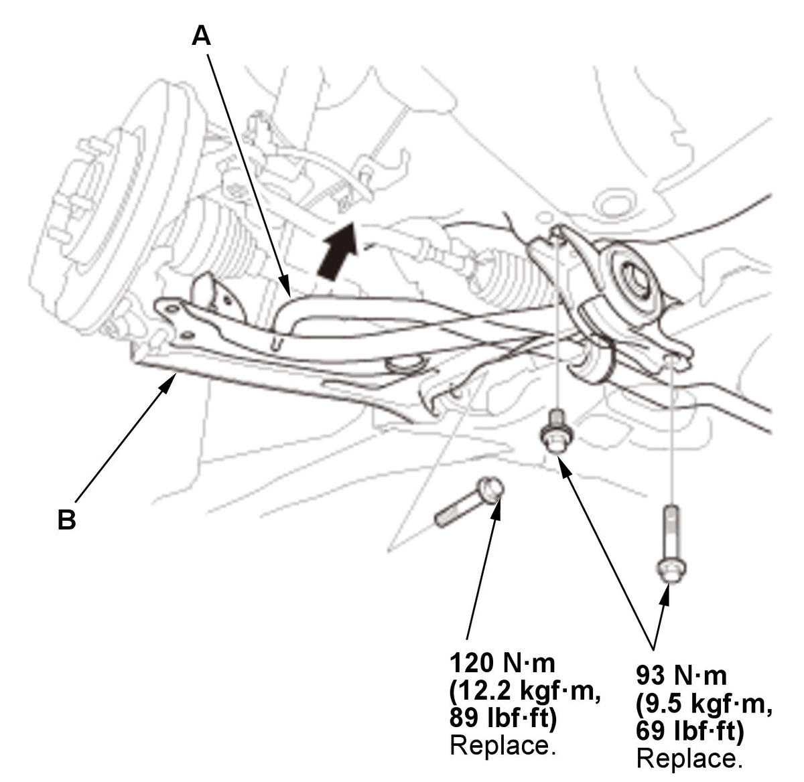

Removal and Installation
- Vehicle - Lift
- Front Wheel - Remove
- Engine Undercover - Remove
- Stabilizer Link - Disconnect
1. Disconnect both sides of the stabilizer link from the stabilizer bar . - Lower Ball Joint - Disconnect
1. Disconnect the lower ball joint from the lower arm . - Lower Arm - Remove

Courtesy of HONDA, U.S.A., INC.1. Move the end of stabilizer bar (A) toward the upper side. 2. Remove the lower arm (B).
NOTE:
- Use a new lower arm mounting bolts during reassembly.
- Loosely install the nuts and/or bolts to install the bushings, load the suspension with the vehicle's weight, and then tighten the nuts and/or bolts to the specified torque.
- All Removed Parts - Install
1. Install the parts in the reverse order of removal. - Wheel Alignment - Check